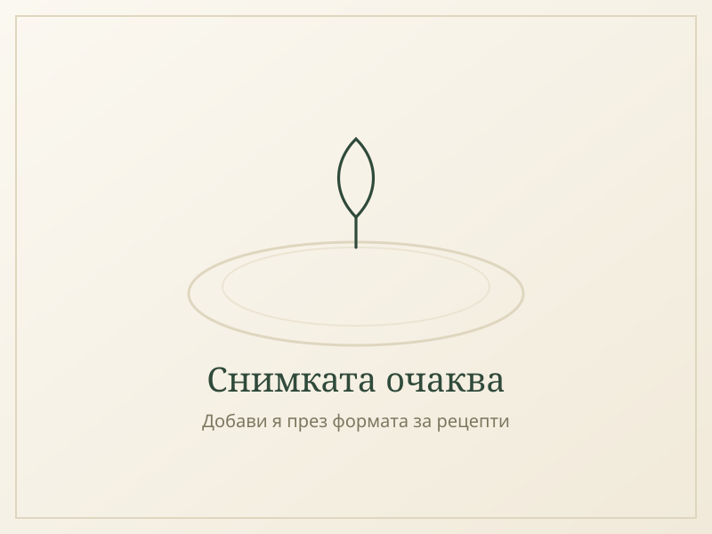

Пилешка купа с киноа и зеленчуци
Печено пилешко филе, печени зеленчуци и лимонов дресинг — готово за 25 минути.

Съставки
- 4 пилешки филета
- 1 чаша киноа, сурова
- 2 чушки, нарязани
- 2 тиквички, нарязани
- 2 ч.л. зехтин
- сол и черен пипер
- сок от 1 лимон
- прясен магданоз
Начин на приготвяне
- Сварете киноата според инструкциите на опаковката.
- Изпечете чушката и тиквичките на 200°C за 15 минути.
- Подправете и запечете пилешкото филе до готовност.
- Подредете всичко в купа, полейте с лимонов дресинг и магданоз.
Защо тази рецепта си заслужава
Защо е полезна
Пилешкото филе е един от най-чистите източници на постен животински протеин, беден на наситени мазнини. Киноата допълва аминокиселинния профил и добавя фибри и желязо, а печените чушки и тиквички носят витамин C и антиоксиданти, които подпомагат възстановяването на клетките след натоварване.
Кога е най-подходящо да се яде
Балансираното съотношение протеин-въглехидрати я прави подходяща за обяд, особено между две тренировки или през активен работен ден. Лимоновият дресинг я прави достатъчно лека и за топло време, без да натоварва храносмилането.
Какво дава на тялото
Едно хранене осигурява около 38 г качествен протеин, нужен за поддържане и възстановяване на мускулната маса, заедно с фибри и микроелементи от зеленчуците, които подпомагат храносмилането и нормалната работа на имунната система.
Защо домашно приготвеното е по-полезно от фастфууда
За разлика от пилешките продукти в бързите вериги, тук няма панировка, дълбоко пържене или скрити захари в соса. Печеш филето само със зехтин и подправки — чист протеин, без излишни калории и с пълен контрол над качеството на месото, което слага в чинията.
Още рецепти в същия дух

Протеиново бурито с пиле и сос Каджун
Пикантно пиле с чушки и ориз в кремообразен сос от гръцки йогурт, завито в тортила — 30 г протеин на бурито.
Свинско със зелен боб и картофи
Домашна манджа от свинска плешка, картофи и зелен боб, подправена с мащерка и джоджен и сгъстена с брашно.
Свинско с грах и картофи
Домашна манджа от свинска плешка, картофи и грах, подправена с мащерка и джоджен и сгъстена с брашно.